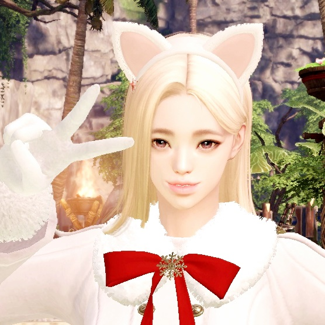

섬의 마음 🌍
알라케르 1시 50분 / 7시 50분 / 1시 50분 / 4시 50분 / 7시 50분 / 10시 50분
무릉도원 0시 / 6시 / 12시 / 4시 / 6시 / 10시
미지의 섬 0시 20분 / 4시 20분 / 10시 20분 / 1시 20분 / 4시 20분 / 10시 20분
볼라르 섬 :: 모험 섬
갈망의 섬 :: 느린 거북이의 부선장 처치 시 획득하는 세티노의 비밀 가방에서 획득
아르곤 :: 얼음 석상의 체력을 0으로 만들 시 획득
얼음과 불의 섬 :: 브리아레오스 처치 시 획득
에버그레이스의 둥지 :: 추오 처치 시 획득
죽음의 협곡 :: 수신 아포라스 처치 시 획득
지고의 섬 :: 에르제베트 신뢰 달성
알라케르 :: '화이트 치킹'과 '블랙 치킹' 중 한 마리를 처치하면 등장하는 '골든 치킹'처치 시 획득
무릉도원 :: 탱글탱글한 복숭아 5600개 모아 천년 나무의 싹으로 교환 후 심어서 획득
환죽도 :: 진저웨일 신뢰 달성
스노우팡 아일랜드 :: [상자] 즐거운 눈싸움 기념 주머니